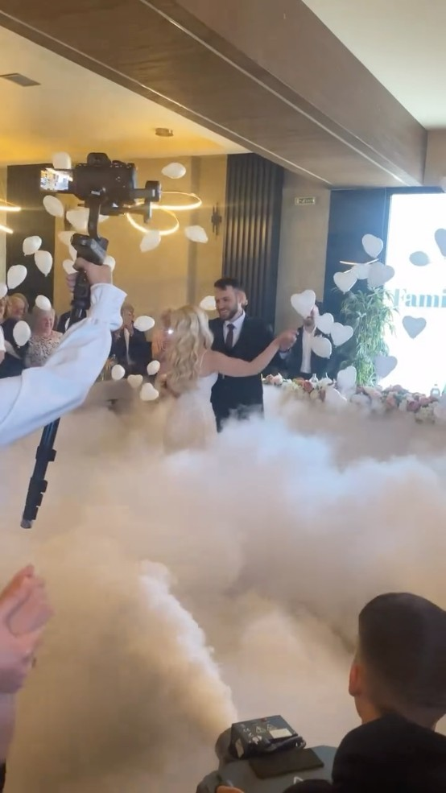
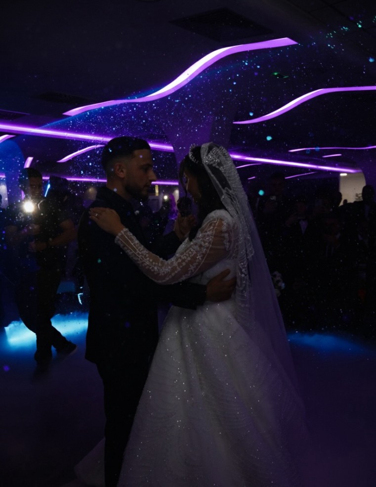
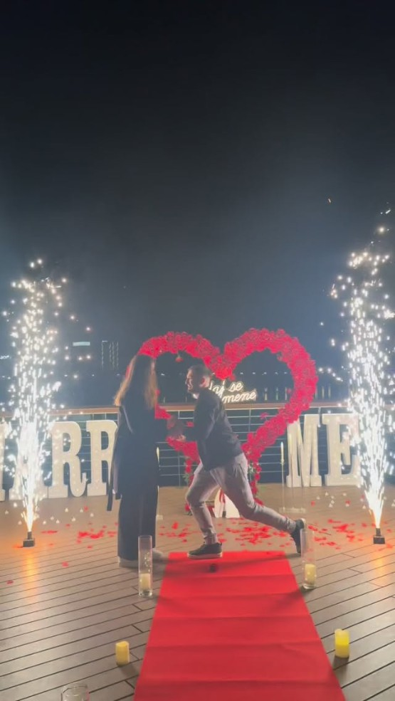
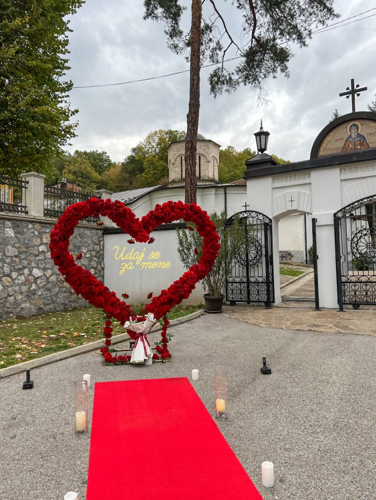

Teški dim (suvi led)
Gusti beli dim od suvog leda ostaje nisko pri podu i prekriva podijum, pa prvi ples izgleda kao ples na oblacima.
Video na InstagramuVaša ljubav, naša magija
Teški dim, balon eksplozija, vatrometi, laseri i konfete za svadbe, veridbe, otkrivanje pola bebe i rođendane. Radimo na teritoriji cele Srbije i u regionu.

Cela Srbija i region
Beograd, Niš, Kruševac, Novi Pazar, Požarevac, Kopaonik, Bor, Pirot, Čačak, Vrbas i dalje
60.000+ pratilaca
Svaku proslavu možete pogledati na našem Instagram profilu
Obučeni tehničari
Naš tim donosi opremu, postavlja je i izvodi efekte u pravom trenutku
01 · Prvi ples
Efekti u sali koji podijum pretvaraju u scenu. Mogu se kombinovati, a najčešće idu zajedno dim, balon eksplozija i podni vatromet.
Mašina koja ispunjava prostor mehurićima od sapunice, za prvi ples i tortu.
Veštački sneg koji lagano pada po podijumu dok plešete.
02 · Vatrometi
Od dnevnog vatrometa ispred crkve do fontana iskri oko podijuma i velikog noćnog vatrometa na kraju večeri.
Vatromet srce i vatreno srce
Veliko srce koje iskri ili gori iza mladenaca.
Vatreni luk
Luk od iskri iznad mladenaca.
Vatropad
Zavesa zlatnih iskri koja pada kao vodopad, odlična pozadina za fotografije.
Podni roto vatromet
Podne fontane koje se okreću i šire iskre u krug.
03 · Torta i zdravica
Dok sečete tortu, iza vas se pali efekat koji izaberete:
04 · Za goste
05 · Veridbe
Pripremamo celu scenu za najlepše pitanje: srce od ruža, crveni tepih, sveće, svetleći natpis „Udaj se za mene“ ili slova MARRY ME, uz specijalne efekte u trenutku kada kaže „da“. Radimo na lokaciji koju izaberete, u Srbiji i regionu.
Video na Instagramu


06 · Otkrivanje pola bebe
Organizujemo otkrivanje pola bebe sa efektima u roze ili plavoj boji, tako da najlepšu vest cela porodica sazna u istom trenutku.
Najtraženije kombinacije
Prvi ples
Teški dim, balon eksplozija i prskalice
Prvi ples
Teški dim, balončići u dimu i podni vatromet
Torta
Roto cvet i podni vatromet
Zdravica
Šampanjac kupola i vatromet
Radimo i 18. rođendane, dečje rođendane i devojačke večeri. Recite nam ideju i budžet, a mi predlažemo efekte.
Kontakt
Javite nam datum, mesto i vrstu proslave. Proveravamo da li je termin slobodan i šaljemo ponudu sa efektima koji odgovaraju vašem prostoru.